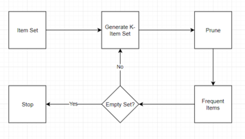
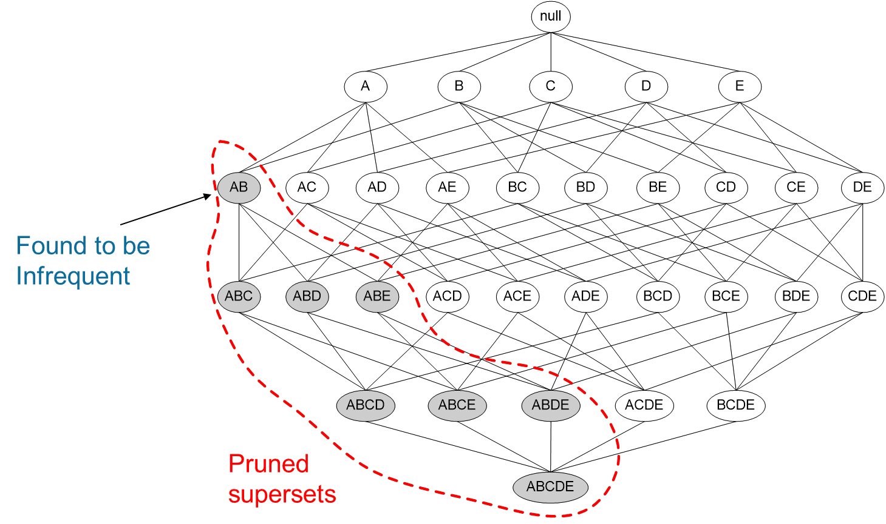
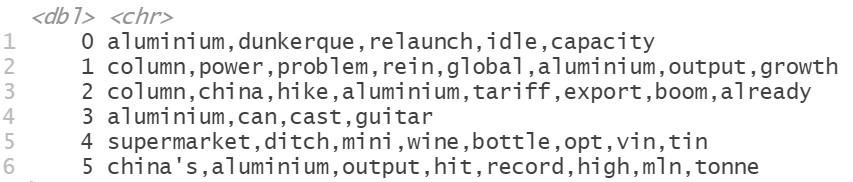
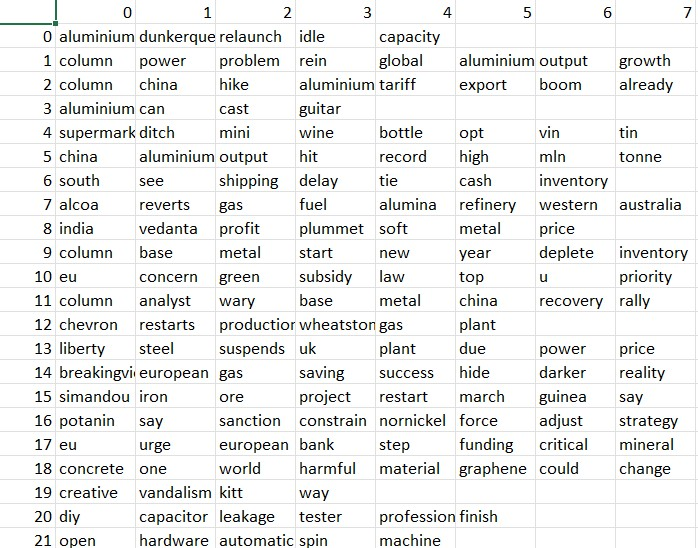
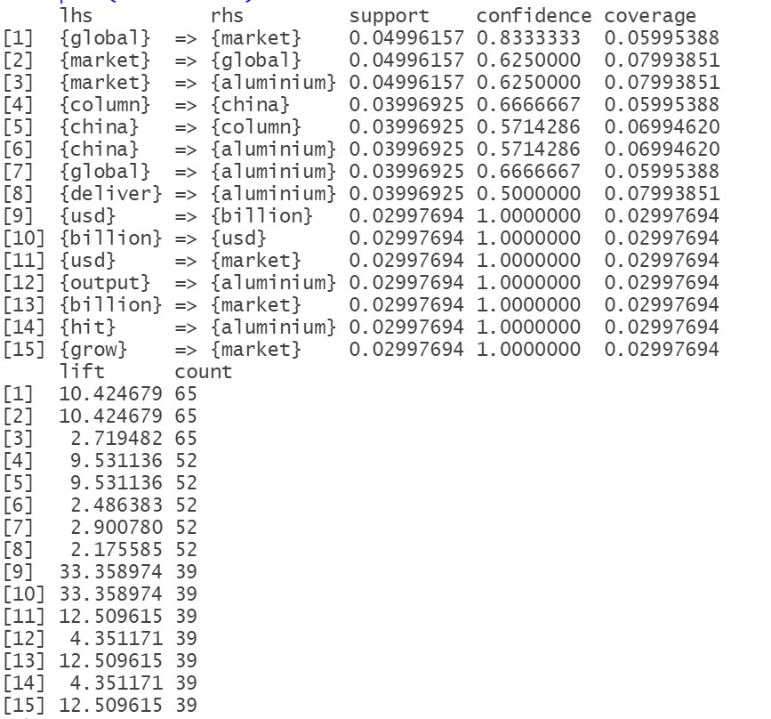
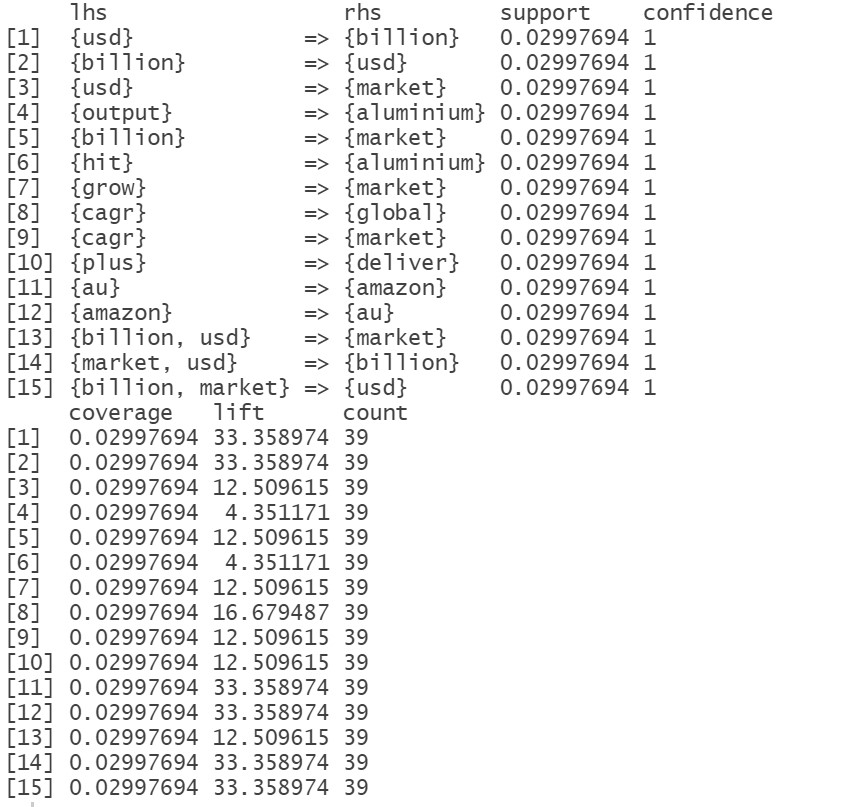
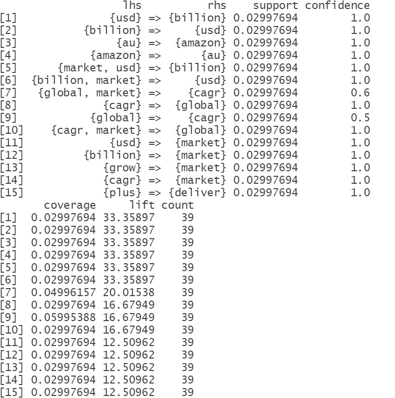

Association Rule Mining (ARM)
Overview
ARM is a rule-based machine leaning method for discovering interesting relations between variables in large databases. Following are the building blocks of ARM
What are rules?
Association rules are "if-then" statements, that help to show the probability of relationships between data items, within large data sets in various types of databases. These rules are built based upon the values of support, confidence and lift:
SUPPORT: Within a list of transactions, how many transactions contain item A, so it is just the probability of item A occurring, which we can represent as below. Statistically speaking, it is a frequentist's estimate of the probability.
CONFIDENCE: Out of the transactions that contains item A, how many also contains item B. The bigger the overlap, the greater the confidence we have that people who are buying item A also buys item B
LIFT: The ratio between Confidence of A and Support B. This measure is used to determine if item A and B are independent or not
Apriori
It is an algorithm used to find frequent patterns. It can be described using a few steps

Using the step number 2, we are able to prune the significant number of frequent items that have a support less than a threshold value. This will help us to not calculate into those frequent supersets that will surely have a lower support than the current ones. This fact is true given that the support of sets becomes smaller as we add more items.
How is ARM used in this project?
ARM is implemented on the textual data collected from Newsapi.org Corpus contains headlines of the news articles related to the keyword "Aluminium". Aim of this implementation is to analyze which keywords are most used with Aluminium industry. This shall open doors for new hypothesises and research regarding demand and recycling.
Data Preparation
Here is the raw transactions data:
Here is a snippet of transactional data that is used in ARM. Access the data here.
Code
Here is the code for ARM
Results
Setting the threshold support to 0.03 and confidence to 0.5 renders 8 association rules. Here is the visualization for the same:
Tweaking the support threshold to 0.025 generates 30 association rules that are represented below:
Top 15 rules with highest support
Top 15 rules with highest confidence
Top 15 rules with highest lift
Even though the corpus is collected using the keyword "Aluminium" but ironically, the top 10 rules with highest lift does not contain the word "aluminium". This might reflect the fact that news headlines are succint.
Conclusions
The dataset collected for association rule mining is not tightly coupled with the problem statement. This technique in the project's context remains limited to exploration. From the top association rules, we cannot deduce any meaningful relatio nships/rules related to Aluminium. Some of the top assocaited words with Aluminium are: China, Global, Market, Billion, USD, Output.